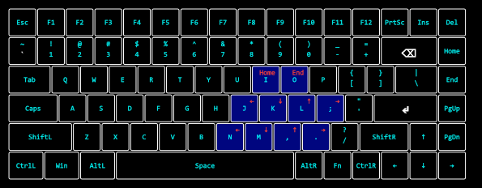

AltNav: Use Left Alt to Turn the Keyboard Center Area into Arrow Keys
AltNav is an arrow-key mapping script based on AutoHotkey2, inspired by Vim’s arrow-key design. It uses the Left Alt key in combination with other keys to achieve cursor movement/jumping, so your hands never need to leave the center area of the keyboard.
1 | Mappings

- When holding
Left Alt,J,K,L,;keys map to←,↓,↑,→respectively. - When holding
Left Alt,N,M,,,.keys map to 4 consecutive presses of←,↓,↑,→respectively. - When holding
Left AltandCtrl,N,M,,,.keys map to 16 consecutive presses of←,↓,↑,→respectively. Left Alt+I→ Move cursor to beginning of lineLeft Alt+O→ Move cursor to end of lineMove cursor to top of file
Ctrl+Left Alt+I→Ctrl+Home
Move cursor to bottom of file
Ctrl+Left Alt+O→Ctrl+End
All cursor movement mappings support holding
Shiftto select text, e.g.,Shift+Left Alt+Jmoves the cursor left while selecting one character. Behavior is the same as the conventionalShift+arrow keys.
2 | Features
- Quick cursor jumps while editing text, without moving your hands away from the center area of the keyboard, and without relying on a mouse
- Triggered with the
Left Altkey, no need to distinguish between read mode or edit mode, etc., and normal typing is not affected - Key mappings are global, not limited to any specific application
- Movement step sizes are 1, 4, and 16, balancing precision and fast navigation
3 | Installation
- Windows platform
- Requires AutoHotkey2
- To input in programs with higher privileges, run this script as administrator.
4 | Design Philosophy
4.1 | Key Selection
JKL; follows Vim’s arrow-key design. However, Vim’s original arrow-key order is H, J, K, L corresponding to Left, Down, Up, Right. But when your fingers rest naturally on the keyboard, your right index finger is on the J key. If you want to keep your right index finger on J without moving, and place four fingers on the four keys simultaneously, then JKL; fits best.
When designing the Home/End mappings, there were two options. Option A is the one currently adopted, namely Left Alt+I/O; Option B is Left Alt+H/'.
Option B is semantically better, Home, ←, ↓, ↑, →, End form a straight line. But Option A was ultimately chosen. Because when your right index finger is on J, your middle and ring fingers naturally curl over I/O, making them more comfortable to press; and Home/End are still frequently used in text editing, so the combination of middle/ring fingers provides more strength than index/pinky.
4.2 | Direction Order
Regarding the direction order, the reason for choosing Left, Down, Up, Right is twofold:
- The order is consistent with Vim (though in fact, before designing this mapping, I had not been exposed to Vim-style arrow keys, nor did I have any corresponding habits or muscle memory.)
- The
DownandUpkeys are handled by the middle and ring fingers respectively. These two fingers have more pressing strength, making them suitable for frequent up/down scrolling through content.
There are also two drawbacks:
- The
Rightarrow key is used more frequently but is handled by the weaker pinky - This order is a bit counterintuitive at first glance. Grouping by direction, the four arrow keys can be divided into two dimensions: horizontal and vertical. The
Left, Down, Up, Rightarrangement lacks a strong pattern. An order likeLeft, Right, Up, Down— with horizontal and vertical pairs grouped together — seems more intuitive.
4.3 | Long-Distance Movement
For fast movement, the script provides three step sizes: 1, 4, and 16. Each level is 4 times the previous one, so one large move can replace 4 smaller moves. Any movement distance can be composed using combinations of ±1, ±4, ±16. This is equivalent to decomposing movement distances in base 4: each larger step reduces the total number of keystrokes while retaining the precision of single-step moves.
In terms of key placement, moving from JKL; to NM,. is essentially a vertical shift, with each column preserving the same direction. The top row handles single steps, the bottom row handles 4-step moves, and holding Ctrl further amplifies them to 16 steps.
5 | Known Issues
This script may not work properly under remote control software or in virtual machines.